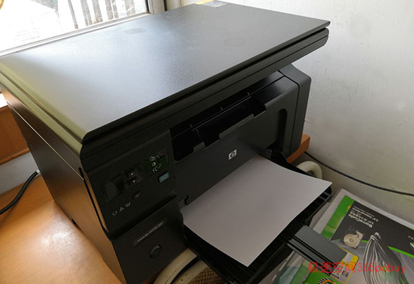

老王存了五年的钱，终于买了辆中型SUV，高高兴兴带着老婆试跑了一圈三环路，刚开回家。哭了，老婆问他，喜极而泣？老王说：从4S店出来后刚加了一箱油，现在油表已经到底了，咱养不起它呀！
打印机/一体机也如此，性价比不仅仅是看一次性价格，后期成本才是大头。 此文为大家介绍家用、小型办公方面的打印机、一体机的选购注意事项。
注：以下介绍难免会涉及到具体型号，不一定非要选这款不可，可按照实际打印量和耗材成本的角度去考虑，自行选择合适的机型。
我的帮手，一台2016年9月购买的黑白激光一体机，本来它还是很健康的，昨天患个小感冒，由于药费太贵，再加上饭量有点大（耗材贵），虽然三年还不到，也不得不让它提前退休。
这就是“小白姑娘”，看起来苗条，干活也麻利，任劳任怨，三年来基本没有故障，就是吃饭比咱小伙子要厉害。
本来，小白姑娘是拥有“鼓粉分离”的低成本光环的，后来发现——
“鼓粉分离”仅仅是看起来美丽
对比：
M115b （国产硒鼓）大约110元/支，粉盒大约：60元/支。
而不少鼓粉一体的一体机，如HP的M1136，更换一个硒鼓（内含碳粉）只需要大约40元。
由此发现，即便是只更换粉盒，鼓粉一体的也并不便宜，一个粉盒就比硒鼓贵，而且碳粉量还较少。
遇到故障的时候，鼓粉分离更头疼。
打印机时不时会有些伤风感冒，一般人很难判断是缺粉、还是硒鼓或激光器导致的故障。

上图，都是字符局部缺失，左边和右边的故障原因并不相同，左边是硒鼓问题，右边是激光器问题。
多数用户遇到此这类现象，可能会误判为缺粉或硒鼓故障。如果为右边的情况，先加粉60元，再换硒鼓110元，会发现170元都打了水漂，故障依旧。而耗材便宜的一体机，鼓粉一体式，便宜的型号（如M1136硒鼓）可以低到30元，即使不是硒鼓问题，也就只花30元冤枉钱。
从以上看出，选购打印机要先考虑耗材成本。
买打印机/一体机是做一道四选一的题目
A、传统结构的喷墨打印机，价格超便宜，但买两个墨盒比机器还贵。
比较适合随时都需要打印，但打印量低于100页/月的用户。
这是一款100多元的低价彩色喷墨打印机，买的时候感觉像吃肉般舒服，便宜味道还好，一旦更换墨盒，就像割肉搬心疼（注：炒股常用词语，意为亏本卖出），一个黑色原装墨盒要90元，彩色的110元，加起来比打印机还贵。
很多低价打印机工厂都是保本或亏钱卖的，然后依靠销售墨盒盈利，这已是众人皆知的秘密。
兼容耗材价格：两个大容量墨盒150元/套（黑色+彩色）
打印量：黑1000页/彩750页
单张成本：0.86元/张
传统结构喷墨打印机的优势在于黑白彩色可兼顾，一次性价格低，月打印量少还是可以的。其缺点很明显：1、打印量稍大成本就高。2、喷头有堵塞的隐患。前几年，由于我们店铺需要打印彩色配置单，先后报废了四台喷墨彩打，全部是喷头堵塞。堵塞的原因是多种的，还不仅仅是“久了不用”，压电晶体损坏、驱动电路故障都会导致无法出墨。
B、原厂连供喷墨
由于墨盒太贵，很多喷打都可以改连供，成本大幅度降低但问题也来了，早期是商家私下改，不仅打印效果不佳，堵头风险大大增加。私改严重影响了厂家的利润，因此只要是私改就失去了官方质保。后来厂家发现，低成本打印是大势所趋，于是主动推出了连供机型。2011年，爱普生公司推出了业界首款原装墨仓式打印机L101/L201。到目前基本形成爱普生、兄弟、惠普和佳能四强争霸局面。
由于彩色激光机价格高，耗材也贵，因此原厂连供的三大优势就出来了：打印量大，单张成本低，还可以兼顾黑白和彩色，看起来是完美解决方案，但弱点也有三个：1、速度较慢。2、文字清晰度略逊于激光。3、堵头的风险不能排除。
爱普生L4158是一款比较细想的连供一体机，适合有色彩需求的用户。L4158采用抗堵头设计，根据实验，静置一个月后仍然可正常打印。
L4158价格：1049元 查看详细参数>>
原装耗材价格：黑79元/支、彩色49元/支
打印总量：黑7500/彩6000，合计13500张
单张成本：0.017元/张
兼容耗材价格只需要70元可买到四色套装，成本低到0.5分/张。
C：黑白激光
这是主流之选，除了无法输出彩色，它的优点很多：一次性购置成本适中，打印速度快，文档字迹清晰，后期成本低，没有堵头风险，遇到故障的概率较小。小型商用一般无彩色需求，选黑白激光是既经济又有速度的理想方案。
选购要点：一看机器价格，二看耗材价格。文章开头介绍的小白姑娘虽然一次性价格较低，但后期耗材价格较高。目前换用了HP 1136，后期使用兼容硒鼓成本极低。

这是“小黑同学”，虫老师刚买的HP M1136黑白激光一体机 查看详情>>
HP M1136价格：1079元
兼容硒鼓价格：50元/个（大容量）
打印总量：3000张
单张成本：0.016元/张
M1136的硒鼓很便宜，低到30元都能买到，还有的具备“易加粉”功能。只要打印量不是非常大，还是别加了，用完就买硒鼓换上，简单方便，自己加粉还有吸入碳粉的风险，对肺不利。
很多时候我们都有复印需求，在外面随便复印几张身份证就要几元，激光一体机（打印、复印、扫描）比单打印机适用范围更广，价格也只比单激光打印机多大约300元。
D：彩色激光
价格和后期成本都不低，还不是主流。
HP M180n是价格低于3000元的彩色激光一体机，目前价格为2899元。如果说以前的彩色激光一体机的价格在天空飞翔，现在的价格只能算在半空中悬浮。
彩色激光的后期成本比较高。
原装硒鼓价格：1600元/套，买一套有点割肉刮骨的感觉。
打印总量：黑1100/个，彩900张/个，合计3800张
单张成本：0.42元/张
使用兼容硒鼓价格相对便宜，500多元/套，单张成本0.14元。
四种类型都有其目标用户群，相对来说，第2和3类是主流之选，对色彩无要求，首选黑白激光，虽然单张成本略高于连供，但文字效果好，速度快，用起来省心。
通过以上介绍，相信下面这道选择题，您的心中会有一个理想的答案。
打印机/一体机主要有四种类型，您想买：（ ）
A：传统结构喷墨
B：原厂连供喷墨
C：黑白激光
D：彩色激光